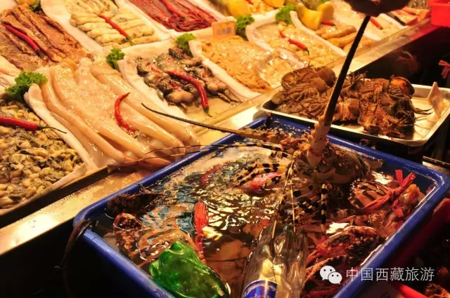

新华网

台湾夜市常见的宝岛特色美食11日亮相雪域高原，首次出现在拉萨举行的西藏旅游文化博览会（以下简称藏博会）上，让当地百姓在家门口就能买到地道的台湾干货，品尝到原汁原味的台湾美食。
“这次有8家台湾干货客商参加藏博会产品展销活动，还有17家台湾夜市摊贩业主带着各色美食亮相藏博会餐饮街。”台湾观光夜市文化协会副会长柯宏腾介绍说，“在参加完不久前举办的西藏雪顿节相关活动后，我们挑选了一些受欢迎的精品项目留下来继续参加藏博会。”
据了解，这是台湾客商首次参加藏博会，此次台商参展时间将持续到9月20日。
第三届藏博会由文化部、国家旅游局、西藏自治区政府共同主办，于9月10日至16日在拉萨举办。
11日是藏博会会展中心开馆巡展首日，展会现场人潮涌动。在西藏会展中心２号馆台湾客商展区，不少参观者饶有兴致地驻足选购商品。
“我特别喜欢吃台湾牛轧糖，有股浓郁的奶香味，味道又纯又甜。”在展馆内四处参观的藏族女大学生次仁德吉告诉记者，“台湾展商来一次不容易，这次一定要多买些台湾零食。”
“这次我们带来了近50种台湾干货，既有大家熟知的牛轧糖、三星葱等零食，还有柚子参、高山茶等特色商品。”参加藏博会展销活动的台湾丰田食品有限公司总监许达夫告诉记者，展位人气很旺，公司今天的销售额估计就有几万元（人民币，下同）。
走出会展中心，记者来到由一顶顶富有藏式韵味的帐篷组成的餐饮街，这里人头攒动，相当热闹。在餐饮街的一头，聚集着十几家台湾夜市小吃摊位，他们正在全力准备着，以便明日开门迎客。
“这次亮相餐饮街的台湾夜市摊主来自全台各地，基本囊括了台湾主要小吃风味，这回我跟助手主要是做五香肉卷、韩风酥塔等特色小食。”来自高雄的小吃摊主刘森木告诉记者，前阵子参加了雪顿节，没想到当地人对台湾美食这么热衷，当时自己的小吃摊位挣了有8000多元，“希望这次藏博会的人气更旺”。
对于藏台两地餐饮食品行业的交流前景，台湾客商们信心满满。
“要是以后有当地人愿意加盟的话，我们很乐意让台湾美食在西藏落地生根。”刘森木说，西藏自然环境保护得很好，天然食材品质很高，制作美食可以就地取材，这一定程度上可以降低食材的运输成本。
“我们已经和西藏烹饪协会达成共识，明年６月还将在西藏举办一个台湾美食巡展，届时会把更多的原味台湾夜市美食带过来。”柯宏腾表示，西藏是著名旅游胜地，有不少外地游客，相信台湾美食能在雪域高原上找到市场。
不少参展台湾客商表示，在把台湾优质食品带给更多西藏同胞的同时，也希望通过台湾客商这一“中间人”把更多的西藏特产带回台湾，加深对彼此社会文化的了解。